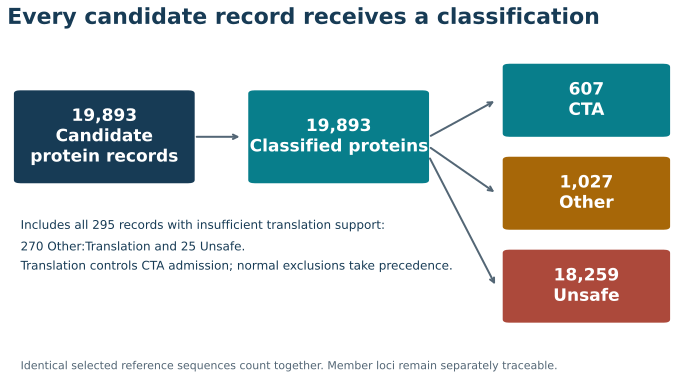
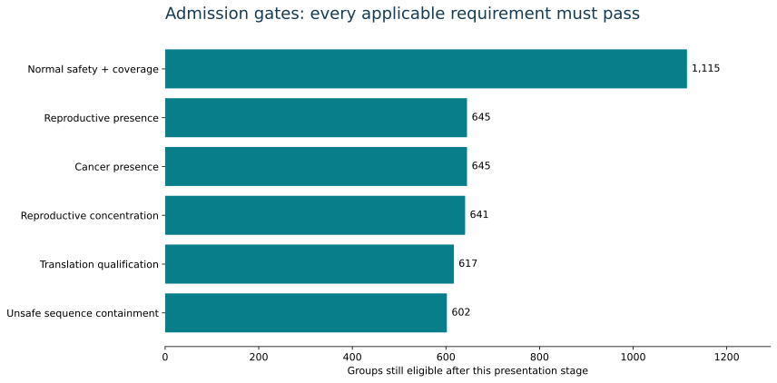
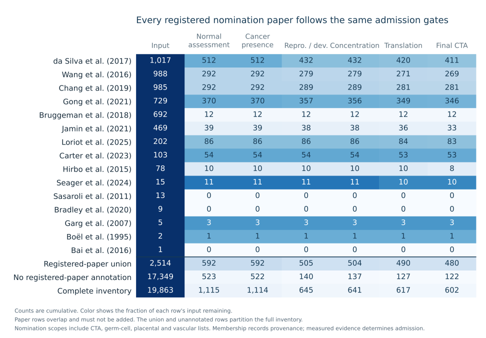
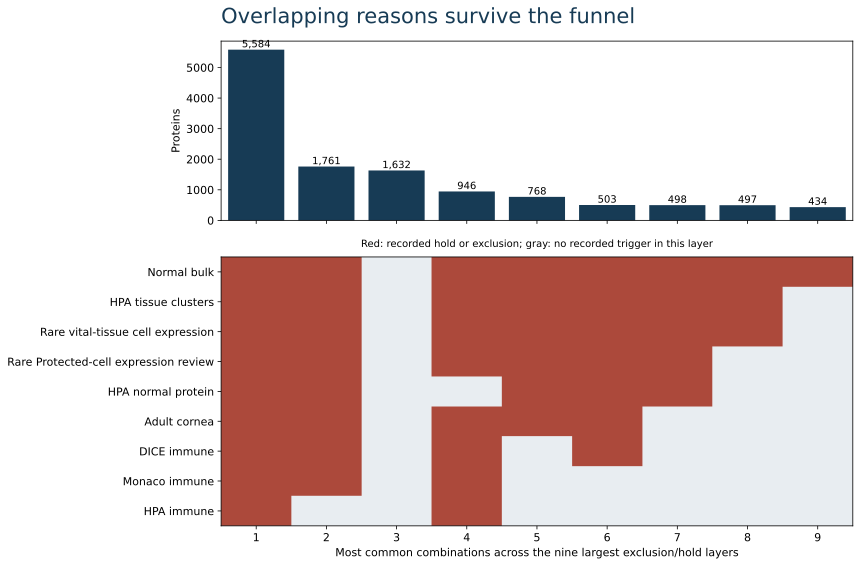
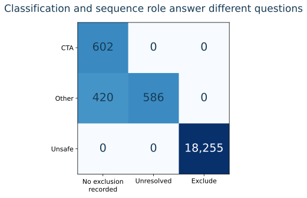

What OncoRef calls a CTA
An OncoRef CTA candidate is a reference-resolved protein with supported cancer expression and qualifying reproductive or developmental association that passes the named normal-tissue evidence, coverage and selection rules. CTA admission requires qualifying coding annotation or supported ncORF evidence and qualification of the exact selected translation. Every input record is assessed, including those with insufficient translation support.
The current human policy produces 602 CTA, 18,255 Unsafe and 1,006 Other proteins. It evaluates 19,863 candidate proteins in the complete inventory, counting identical selected reference sequences together and retaining every member locus. This is not a complete inventory of splice isoforms or modified proteoforms.
CTA is a research candidate designation; it does not establish peptide-HLA presentation, receptor recognition, therapeutic abundance or clinical safety. Reproductive/developmental support includes adult reproductive tissues, placenta, extraembryonic tissues, embryo and fetus. These routes remain distinguishable; developmental association does not imply adult testis restriction.

From candidates to CTAs
All 19,863 candidate records enter the same normal-evidence and admission path. The 259 records formerly removed at entry stay visible: 254 have only NMD/CDS-not-defined reference transcripts and 5 have only single-study Ribo-seq support. Insufficient translation support does not establish absence or normal-tissue safety.
CTA admission requires qualifying translation support and the separately qualified exact reference record. Applicable normal exclusion takes precedence and establishes Unsafe; otherwise insufficient translation qualification yields Other:Translation and sequence review. An annotated coding sequence is not experimental proof of protein production.
Apply all normal-tissue evidence independently. Accepted exclusion evidence establishes Unsafe. Unresolved findings or missing required coverage prevent admission and require review; they do not establish Unsafe. Every target must also pass reproductive/developmental association, cancer presence, concentration, translation qualification and sequence-containment rules.
The chart uses cumulative counts. Of 1,115 proteins passing normal assessment, cancer presence retains 1,114; reproductive/developmental presence then narrows these to 645. The previous order showed 645 at both gates because every reproductive/developmental survivor already met cancer presence. One compatible positive tumor RNA sample or reviewed tumor protein makes cancer presence a broad gate, not an abundance or prevalence requirement.
Every applicable evidence layer is still evaluated, including after an early exclusion. Unsafe takes precedence. Display order changes neither final classifications nor the priority used to assign Other subtypes.

Published nominations through the funnel
All 15 registered nomination papers appear in the companion funnel. Their union contains 2,514 proteins: 480 finish as CTA, 1,876 as Unsafe and 158 as Other. A protein can occur in several papers, so individual paper rows must not be summed.
The 17,349 candidates without a registered-paper annotation undergo the same assessment and contribute 122 CTAs. Prior nomination is recorded provenance, not a required admission gate. Absence from this finite registry does not establish novelty or absence from the literature.
A publication's measured evidence can support reproductive/developmental association, tumor expression, translation or normal-tissue counterevidence when it meets the corresponding evidence rule. A list label alone does not establish those facts. Germ-cell, testis-biased, placental and tumor-vascular lists retain their original scope alongside CTA nominations.

All paper-by-gate counts · Protein memberships
| Paper | Extracted scope |
|---|
| da Silva et al. (2017) | At least 90% normal-tissue RNA attributable to testis; tumor positivity not required; Gene-labelled tumor proteomics; unique-locus peptide assignment is not established; RSEM >1 in at least 10% of samples in a tumor type; RNA nomination |
| Wang et al. (2016) | Cancer-associated RNA nomination; no antigen validation asserted |
| Chang et al. (2019) | Testis-specific coding gene expressed in at least 1% of TGCT; no broad somatic-cancer claim |
| Gong et al. (2021) | Normal reproductive-tissue enrichment; no tumor validation; Placental RNA enrichment; no tumor-antigen validation |
| Bruggeman et al. (2018) | GC RNA nomination across cancer types; no antigen validation asserted; GC RNA nomination; inclusion depends on TGCT under this study's thresholds |
| Jamin et al. (2021) | CT-pattern microarray nomination; tumor upregulation with no corresponding normal-tissue detection; Core CT annotation; underlying microarray probes may recognize several loci |
| Loriot et al. (2025) | Cancer-germline RNA nomination; strict and preferential classes remain distinct |
| Carter et al. (2023) | Final CT-expression set without detectable thymic expression; functional vaccination evidence is not assigned to every gene |
| Hirbo et al. (2015) | HPA v13 placenta-enriched nominations; 30/86 fast-evolving subset retained as metadata; not tumor validation |
| Seager et al. (2024) | Member of the published 17-target CTA profiling panel; includes differentiation antigen MLANA |
| Sasaroli et al. (2011) | Tumor-vascular candidate list; includes secreted and transmembrane proteins; not a CTA-restricted list |
| Bradley et al. (2020) | CPA expression nominations; HLA peptide and antigen-specific T-cell validation for VGLL1 |
| Garg et al. (2007) | Ovarian-cancer RNA/protein expression and patient antibody responses; no HLA presentation or T-cell validation claimed |
| Boël et al. (1995) | Original BAGE tumor-antigen nomination and autologous CTL recognition; contemporary paralog resolution is not inferred |
| Bai et al. (2016) | Ovarian-tumor and vascular expression/function; no normal-tissue exclusivity claim |
Normal-tissue consequences and expression evidence
Vital, Protected, Manageable and Disposable describe the consequence and tolerability of injury to a specified tissue/cell compartment. They are qualitative research priorities, not measured fatality probabilities. Immediate function, regenerative reserve, persistent depletion, anatomy and inflammatory amplification all matter.
The central registry distinguishes 39 bulk tissues and 68 cell populations, with source-linked rationale. A cell-level exception requires resolved tissue and cell identity. An unresolved or mixed label cannot earn a narrower allowance; reproductive/developmental membership is a separate anatomical axis.
RNA detection, accessible surface protein, peptide-HLA presentation, functional recognition and demonstrated injury are distinct evidence levels. CAR and TCR target availability are different questions. A weak initiating target can still produce inflammatory injury in other cells. Missing evidence is never measured zero.
- Vital
- Highest protection priority: plausible life-threatening failure, major irreversible neurological/sensory loss, or loss of indispensable regenerative support.
- Protected
- Persistent functional or structural injury is a major concern; compensation is incomplete or direct immune-depletion evidence is insufficient.
- Manageable
- A defined compartment has credible replacement, compensation or supportive-treatment precedent; acute inflammation and persistent recognition still require review.
- Disposable
- Narrow conditional allowance for loss of a specified compartment; does not imply painless, reversible or inflammation-free ablation.
Vital evidence: Heart and alveolar injury: direct human T-cell injury and animal depletion evidence support high-consequence concerns; neither estimates a universal fatality rate. Cardiovascular toxicity and titin cross-reactivity of affinity-enhanced T cells in myeloma and melanoma. Targeted Type 2 Alveolar Cell Depletion: A Dynamic Functional Model for Lung Injury Repair.
Protected evidence: Persistent salivary injury and impaired ciliary function illustrate lasting functional consequences. Disease and depletion models are not interchangeable with immune killing. Sicca Syndrome Associated with Immune Checkpoint Inhibitor Therapy. Lung function from school age to adulthood in primary ciliary dyskinesia. Parent stem cells can serve as niches for their daughter cells.
Manageable evidence: B-cell depletion and thyroid injury have clinical replacement or supportive-treatment precedent. Management remains conditional on the exact compartment and treatment. Tisagenlecleucel in Children and Young Adults with B-Cell Lymphoblastic Leukemia. Immune-Related Thyroiditis with Immune Checkpoint Inhibitors.
Disposable evidence: Gallbladder removal provides a narrow surgical precedent. Melanocyte-targeted T cells also damaged eye and ear tissues: a cutaneous allowance cannot extend to every melanocyte compartment. Treatment for Gallstones. Gene therapy with human and mouse T-cell receptors mediates cancer regression and targets normal tissues expressing cognate antigen.
These are policy judgments supported by mechanisms and scoped evidence, not validated clinical risk classes. All tissue/cell rationales and reference limitations.
Evidence has multiple independent meanings
Review completion, interpretation and policy effect are separate. A completed review can retain an unresolved interpretation. A rejected protein claim remains visible with its rationale; rejecting that claim does not prove normal-tissue absence.
All 196 historical findings have linked current dispositions. MAGEC2, LGALS13 and PLCZ1 retain material holds. Their evidence access depth, reagent identity, adult/fetal and isoform limits are stated explicitly. The broader literature review remains incomplete.
Fatal neurological injury in the MAGE-A3-reactive TCR cohort remains product-specific evidence. The MAGEA12 and EPS8L2 explanations are both retained as unresolved. MAGEA12 remains Unsafe under an independent rare-cell finding. Neither receptor causality nor favorable clinical credit transfers across a gene family.
MAGE-A3-reactive TCR neurological injury report · MAGEA12/EPS8L2 causal re-examination

Translation, identity and downstream sequence use
Translation qualification asks whether the exact selected primary-locus record supports target sequence use. Complete coding annotation, start/stop codons, biotype and sequence integrity are assessed separately from normal-tissue hazard. An alternate-locus protein cannot silently rescue an incomplete primary record.
The verified bundle retains original sequences, every source occurrence, qualification reasons and coverage gaps. It supplies contiguous AA20 segments with original coordinates and never joins across ambiguity, internal stops or different records. Selenocysteine-containing records require review under this AA20 contract; this is not a claim that the protein is unexpressed.
Across occurrences, exclude takes precedence over review, then allow. Unsafe sequence remains exclusion evidence even in an incomplete record. Allow means no exclusion from the assessed record under this policy. Exact matching does not validate an approximate similarity cutoff or patient-HLA decision. The historical Unsafe plus additional-forbidden assets retain their older policy identity.

Research parameters and coverage limits
Without usable matching protein staining, the upper RNA limits start at 4 for Vital, 8 for Protected and 16 for Manageable tissues, in the source's own TPM or nTPM units. Approved, Supported and Enhanced negative IHC respectively multiply the starting limit by 2, 4 and 8. Reviewed product-specific clinical evidence can add one doubling within the same cap. A value must be above the limit to trigger this RNA rule. Corneal CP10K uses separate limits, not a TPM conversion. These are policy choices, not measured safe exposures.
One compatible tumor sample above zero establishes the current cancer-presence criterion, not sufficient target abundance or cohort prevalence. Reproductive RNA uses a 5-unit criterion with assay-specific support requirements; reliable reproductive IHC and reviewed protein provide separate routes. Adult/placental diffuseness above 10% can block identity, never establish Unsafe.
The rare-cell panel uses a 1% detection screen with cell-support rules. Detection frequency is not abundance. Coverage is limited by sampled organs, donor age, activation states, paralog mapping and assay resolution. Optional panels remain disclosed when missing. A 95% Unsafe 9-mer overlap blocks practical candidate admission, but is not a clinical cross-reactivity validation.
The complete gate table below retains the actual executable rules and source IDs. Human thresholds are not transferred to dog or mouse; their native nominations remain unassessed until supported by a species-specific policy.
Plain-language decision categories and the complete RNA-limit table
Does CTA mean expressed only in cancer?
No. CTA admission requires cancer expression plus qualifying reproductive or developmental association. The CTA total is not a count of proteins absent from all normal tissues, including testis, placenta, embryo and fetus. Passing normal-tissue thresholds is not a claim of zero normal expression.
The current data do support an observed-expression count: 40 cancer-expressed records have complete required bulk coverage and zero stored adult/reproductive RNA summaries. Of these, 22 have developmental measurements and 0 also have zero developmental RNA; 18 lack developmental measurements. Stored zeros are not proof of absent protein, and tiny positive RNA values are not validated protein production.
The separate low-expression screen finds 66 preliminary matches. Independent normal-cell evidence excludes 6 of them. A numerical profile match is not a final cancer-only designation; remaining matches retain explicit review or coverage requirements. The inventory audit lists every record, counterevidence source and measurement gap.
Cancer-specific altered sequences and peptides require a separate analysis from these reference-protein counts. A mutation, fusion or alternative transcript can create a target sequence even when the source gene is normally expressed; evidence for one such sequence cannot establish exclusivity of every product of the gene.
Reproduction and version changes
Selection policy: oncoref.cta-selection.2026-11-05.1. Role policy: oncoref.sequence-roles.2026-11-04.1. Translation policy: oncoref.translation-qualification.2026-11-04.1.
The 1.29.0 comparison remains pinned. The evidence and translation PRs also retain adjacent baselines, separating changes in category, subtype, role, assessment status and reasons. No target CTA count is an acceptance criterion.
Use the public decision, finding and sequence APIs. The final release receipt binds the decision exports, ontology, curation, qualification, bundle and generated figures. Complete and cached scientific replays must be byte-identical. Historical reports keep their original inputs and policies.
Presentation revision 2026-11-06.1 places the broader cancer-presence gate first after normal assessment and follows every registered nomination paper through the same cumulative gates. Classifications, thresholds and sequence roles are unchanged. Earlier release assets remain frozen.
Complete gate rules
Worked decisions
PRAME · CTA · sequence allow
screened:
Translation: qualified selected record
unresolved / context: The historical blanket primary-stain hold is superseded by the current HPA level/reliability and compartment rules, including prior reagent eligibility. Original raw staining and unresolved specificity remain visible; this policy revision is not new validation of the reagent or evidence of absence. No second historical IHC veto is applied. HPA v23 primary IHC; repeated family profiles are not independent studies
All mapped positive rows, profile notes and reagent summaries reviewed; no independent histology re-read or new experiment; Reliable gene-profile labels do not validate each raw stain. RNA/protein donors are unpaired. Retain observed intensities and identity ambiguity; the decision is a conservative research hold.
accepted / context: Reported Low intensity remains a flag without an automatic protein veto under the current policy; retain the observation and source-specific limitations. 33890816; 35973038
Primary 2021 abstract; 2022 normal-tissue methods/results inspected via primary article search excerpts; Full 2021 methods unavailable; abstract-level conservative acceptance, not proven therapeutic injury. IMA203 evidence concerns a selected peptide/HLA/TCR product and is preserved separately.
MAGEC2 · Other:Held · sequence review
normal_evidence_hold: Reviewed normal-cell knowledge
Translation: qualified selected record
unresolved / review: Material normal-tissue finding remains unresolved; block CTA admission and require sequence review without establishing Unsafe. Negative bulk profiles do not resolve assay identity. HCA587 antigen expression in normal tissues and cancers: correlation with tumor differentiation in hepatocellular carcinoma
Primary abstract rechecked; publisher full text unavailable in this review. Original tissue and antibody controls remain unverified.; Abstract does not settle reagent specificity; no demonstrated target-mediated clinical injury. A neural protein conflict warrants a hold, but the historical antibody result does not establish target-mediated clinical injury or resolve MAGE-family cross-reactivity.
LGALS13 · Other:Held · sequence review
normal_evidence_hold: Reviewed normal-cell knowledge
Translation: qualified selected record
unresolved / review: Material normal-tissue finding remains unresolved; block CTA admission and require sequence review without establishing Unsafe. Negative bulk profiles do not resolve assay identity. Isolation and sequence analysis of a cDNA encoding human placental tissue protein 13 (PP13)
Primary abstracts rechecked (PMIDs 10527825 and 19497882); original adult/fetal specimen labels, bands and reagent controls not independently re-inspected.; Adult versus fetal samples and original protein bands require full-paper adjudication. Conflicting assay identity is unresolved; neither a proven unsafe classification nor unconditional inclusion is justified by these abstracts alone.
PLCZ1 · Other:Held · sequence review
normal_evidence_hold: Reviewed normal-cell knowledge
Translation: qualified selected record
rejected / context: Preserve rejection of the PLCZ1 protein interpretation: the immunostaining measured CFTR. The separately retained qualitative pancreatic RNA finding remains unresolved. Rescuing defective pancreatic secretion in cystic fibrosis by suppression of a newly identified gene
Primary full text: Methods, normal-tissue RT-PCR/Figure 1, and CFTR immunolocalisation. Original isoform mapping and quantitative expression remain unresolved.; Human pancreatic RNA is qualitative, not nTPM. Disease/cell-model functional experiments and mouse measurements do not establish healthy human protein abundance.
unresolved / review: Material normal-tissue finding remains unresolved; block CTA admission and require sequence review without establishing Unsafe. Negative bulk profiles do not resolve assay identity. Rescuing defective pancreatic secretion in cystic fibrosis by suppression of a newly identified gene
Primary full text: Methods, normal-tissue RT-PCR/Figure 1, and CFTR immunolocalisation. Original isoform mapping and quantitative expression remain unresolved.; Human pancreatic RNA is qualitative, not nTPM. Disease/cell-model functional experiments and mouse measurements do not establish healthy human protein abundance.
MAGEA12 · Unsafe · sequence exclude
screened: Rare vital-tissue cell expression
Translation: qualified selected record
SERPINA2 · Other:Translation · sequence review
translation_review: Translation qualification
Translation: incomplete_annotation_tag | incomplete_start | incomplete_stop | noncanonical_start_residue | nonqualifying_transcript_biotype
MROH5 · Unsafe · sequence exclude
screened: Translation qualification; Rare vital-tissue cell expression
Translation: ambiguous_or_interrupted_sequence | nonqualifying_transcript_biotype
SELENOV · Other:Translation · sequence review
translation_review: Translation qualification
Translation: ambiguous_or_interrupted_sequence
Explore every classified protein
The candidate table now includes source-by-source values, top-five tissue and cell contexts, Ensembl/HPA links, paper links, review reasons, sorting and CSV export.
Open the full filterable evidence table · Investigate the 122 CTAs outside the nomination-paper collection · Data-source guide